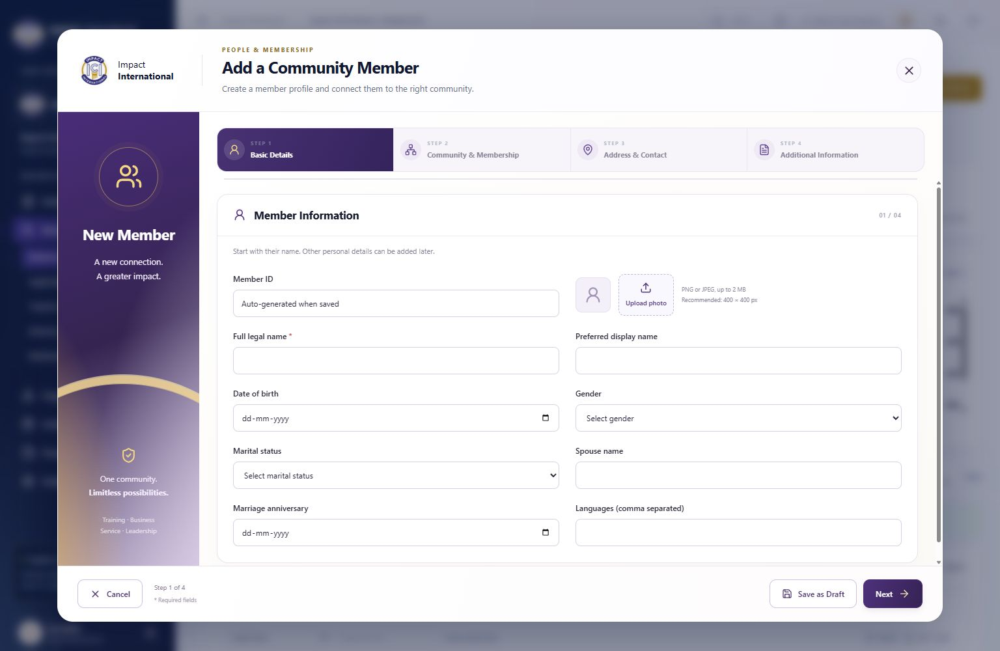

IMPACT INTERNATIONAL · 13 NOVEMBER 2026Add a Community Member
A four-step registration modal with a final review, responsive layout, community cascading selection, member photo, multiple addresses, professional details and supporting documents.
52 / 52Targeted API checks
122 / 122Existing member regression checks
30 / 30Browser checks
Preview

Mobile preview · Open QA app · Open main app
Existing workflows retained
- The same POST /members endpoint and PersonInput fields create registrations. Existing member ID generation and photo processing remain unchanged.
- Duplicate candidates still require explicit selection of an authorized existing person or confirmation to create a separate person. An existing person's saved profile and photo are retained.
- The existing hierarchy endpoint supplies National → Region → District → Zone → Club. Changing a parent clears descendants. Server checks reject unauthorized club and person assignments.
- Invite, import and existing profile editing workflows remain available.
- All previous personal, professional, social, education, tag, contact and address fields remain represented. Date of birth stays optional, preserving the existing requirements.
Backend support and decisions
- Before implementation, the existing address model supported multiple addresses but lacked type and primary flags. Migration
20261113151022_MemberAddressClassification adds only Type and IsPrimary to PersonAddresses, backfills existing addresses as Residential, and marks one existing address per person primary. A filtered unique index prevents multiple primary addresses. Existing PersonId lookup index remains. - No duplicate tables or registration endpoints were introduced. A pre-migration backup is stored locally at
.infra/wizard-pre-migration.dump. The migration was applied to main and QA databases; EF reports no pending model changes. - Membership type is the selected club's existing ClubType, displayed read-only. No separate per-membership type field exists.
- Current office uses Leadership & Appointments and its approval workflow. Registration does not directly grant offices or security roles.
- No configurable member custom-field system exists in the inspected registration schema. Notes and additional information reuse the existing field; no speculative custom-field schema was added.
- Initial status supports Active, Inactive and Suspended through the existing status service. Other lifecycle transitions stay in their existing workflows.
Drafts, retry safety and documents
- Save as Draft stores form values, community, photo and document files in IndexedDB on the current browser/device, partitioned by signed-in user and workspace. It does not create an incomplete Person or Membership. Drafts can resume after reload and are removed after successful submission. Drafts do not sync across devices.
- Client submission locking blocks repeated clicks. A request key and payload hash in existing audit records protect repeated/concurrent POST /members requests. Replaying identical data returns the original result; changing details with the same key returns a conflict.
- Documents use the existing member document endpoint after member creation and require document permissions. If an upload fails, the interface states the member was created, retries only remaining uploads, and offers finishing without the remaining files.
- Photos use the existing PNG/JPEG upload and processing path, limited to 2 MB. Supporting files allow PDF, PNG and JPEG up to 5 MB each, with server content checks.
Verification
QA writes were confined to clubs_impact_dues_upgrade_20261113. Main membership data remains at 3,126 records. Browser fixture IM-000003153 retains DOB, photo, two addresses with the office primary, and its supporting document. A separate failed-document fixture remained a single membership after retry.
Both frontend and backend builds passed. Targeted frontend lint passed without warnings. Existing member ID, photo, privacy, export, import, invitation, status, hierarchy and permission regression checks passed.
- ✓ Required name blocks Next
- ✓ Forward navigation through all four steps
- ✓ Completed tabs can be revisited
- ✓ Previous preserves entered values
- ✓ Date of birth retained and saved
- ✓ Photo upload preview and restored draft
- ✓ National through club cascading selection
- ✓ Changing region clears district zone and club
- ✓ Invalid Indian PIN blocks Next
- ✓ Multiple addresses retained across tabs
- ✓ Office primary address saved
- ✓ Draft saved without creating incomplete member
- ✓ Draft survives browser reload
- ✓ Draft restores selected hierarchy
- ✓ Draft retains document File across reload
- ✓ Unsaved close asks for confirmation
- ✓ Keep editing preserves data
- ✓ Discard closes registration
- ✓ Final review shows member community and addresses
- ✓ Final submission shows generated ID success
- ✓ Double click produces exactly one membership
- ✓ Supporting document uploaded after registration
- ✓ Successful registration clears saved draft
- ✓ Invalid document shows member already created
- ✓ Retry failed upload does not recreate member
- ✓ Possible duplicates require explicit decision
- ✓ 390px mobile full-screen modal has no horizontal overflow
- ✓ Mobile forward and Previous work
- ✓ Sticky mobile footer remains visible
- ✓ Main database existing membership count preserved
API results · Browser results · Existing regression results